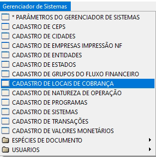
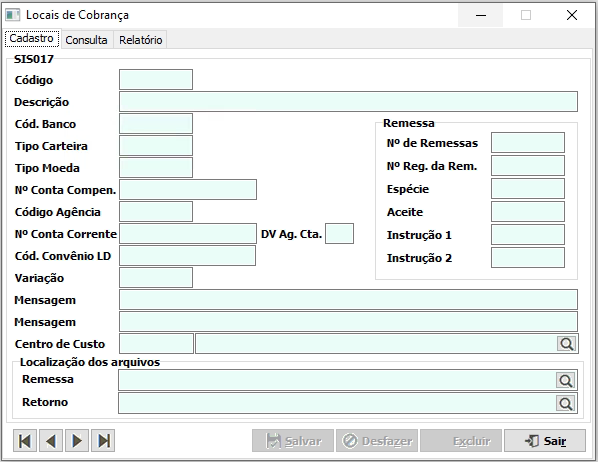
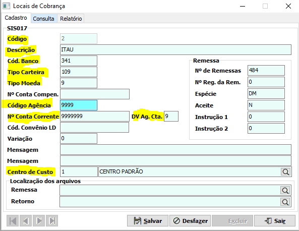
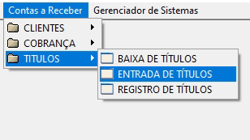

Como configurar um banco no SGD
1- Local de Cobrança
O primeiro passo é configurar a conta do banco no local de cobrança, é a partir destas configurações que o sistema irá se basear para a emissão de boleto/remessa.
Você encontra o cadastro de Locais de Cobrança em Gerenciador do Sistema > Cadastro de Locais de Cobrança.
Conforme a imagen a seguir:
Clicando vai aparecer a seguinte tela:
1.1 Campos Obrigatórios:
- Código: Escolha o número que irá representar o Local;
- Descrição: O nome do banco;
- Cód. Banco: O código real do banco;
- Cód. Carteira: O código da carteira escolhida
- Tipo Moeda: Preencha o código correspodente á moeda;
- Código Agência: Sua agência
- N° Conta Corrente: Número da conta corrente sem o dígito verificador;
- DV Ag. Cta. : Dígito verificador da conta;
- Centro de Custo: O centro de custo padrão do SGD ou outro cadastrado préviamente.).
OBS: Os campos Remessa e Retorno não são obrigatórios, porém é extremamente recomendável que você disponibilize alguma pasta em seu servidor específicamente para armazenar estes dois tipos de arquivo, do contrário o SGD pode acabar salvando seu arquivo em um local indesejado.
Com isso você terá os seguintes dados preenchidos:
Preenchido os dados corretamente, vamos para o próximo passo.
2- Títulos
Normalmente os bancos dão instruções de quantos títulos são necessários para a validação, mas se caso o seu banco não dê esta orientação é comum que sejam feitos dez.
Os campos devem ser preenchidos normalmente, sendo a única diferença o campo "Local de Cobrança", que deve ser preenchido com o local de cobrança recém cadastrado.
Se você possuí alguma dúvida referente ao preechimento dos campos, dê uma olhadinha no nosso tutorial de títulos